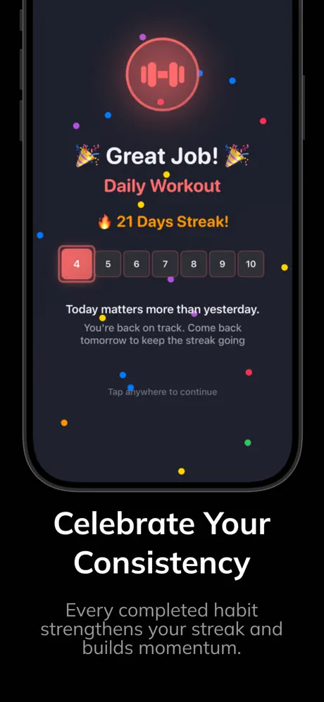
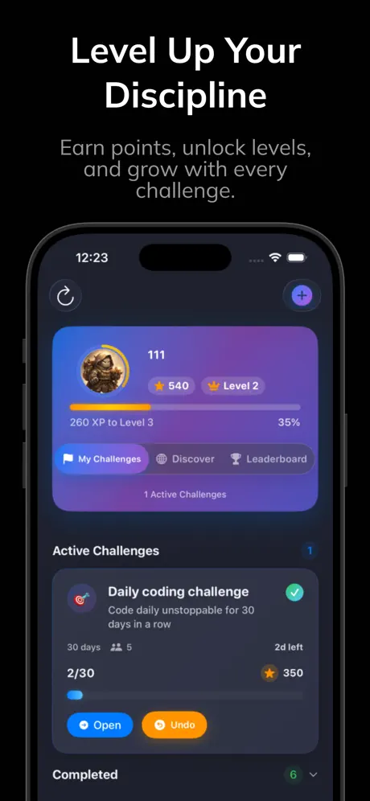

Recent shipped work and flagship apps.



Additional iOS work—newest first. Each card links to the GitHub repository.


SwiftUI movie discovery with TMDB: trending browse, live search, powerful filters, detail with cast and trailers, favorites in UserDefaults, and resilient networking with Combine.


UIKit recipe browser with storyboards and XIBs, MVC, TheMealDB integration, onboarding, favorites with UserDefaults, Kingfisher for images, and ProgressHUD for feedback.


UIKit and Storyboard clone of the native Weather experience: OpenWeather data, hourly and 7-day forecasts, location services, animated weather scenes, and dynamic backgrounds for light and dark mode.


Compact UIKit weather client: GPS for current location or typed city search, URLSession and Codable for API data, delegates, and dark mode friendly layout.


Small UIKit utility to split a bill between multiple people with a tip percentage—clear flow using segues and straightforward OOP structure.


Early UIKit project for optionals, MVC, and classes: sliders for input, calculate, and a modal result screen with recalculate flow.


Personal to-do list with UIKit, segues, and CocoaPods—persistent categories and items for everyday productivity practice.
I’m Daulet Niyazov, an iOS developer focused on native Swift and SwiftUI products. For collaboration, interviews, or app support, reach out by email or LinkedIn.
Policies and support pages for shipped apps:
Other repositories may include privacy notes in their README (for example RecipeBookApp). This portfolio site is static HTML on GitHub Pages and does not collect analytics by default.